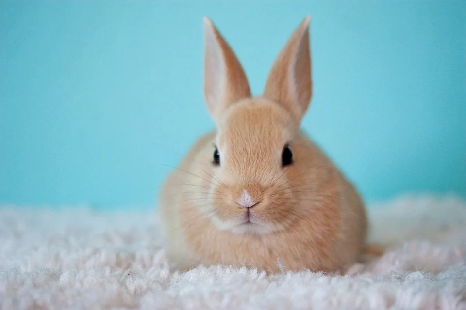

Маленькие кролики рождаются совсем крошечными. Они постепенно растут и становятся самостоятельными.
Читать далее →Основой питания кролика является сено. Также ему необходимы свежие овощи и специальный корм.
Читать далее →.png)

В дикой природе кролики живут в земляных норах. Одомашенные представители данного вида млекопитающих предпочитают более уютное и безопасное место для жизни.
Читать далее →